3 GameObjects & Prefabs¶
In the previous chapter, you learned about the windows and views you’ll use throughout this book. This chapter will focus on the Hierarchy, the Project window and the Inspector — and how to use them together to create a game. Now that you’ve learned how to install Unity and navigate around the editor, you’re ready to create something of your own.
In this chapter and the next, you’ll create your first playable project — a small clicker game — from the ground up! In this game, you’ll construct forks and skewers using an ammunition machine for the tank to use in one of the later chapters.
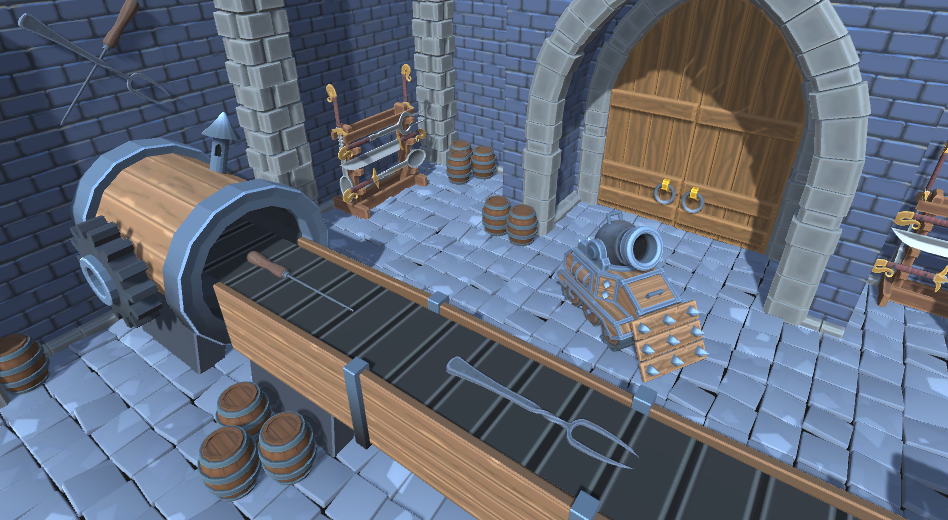
While creating the game, you’ll learn all about GameObjects, the building blocks that can represent just about anything from lights and scenery to NPCs by attaching components to them. These components add logic and functionality to your objects. You’ll also learn the basics of prefabs, which act as GameObject templates and allow you to effortlessly spawn instances of a GameObject into a scene.
Getting started¶
To kick things off, you’ll need to know how to open an existing Unity project. The easiest way to do this is to start up the Unity Hub application first. With Unity Hub opened, click the white Add button at the top right, navigate to the projects folder for this chapter and select the Chapter 3 Starter folder. This will add the project to the top of the list.
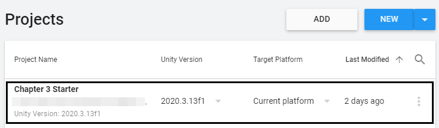
Now, click the name of the project to open it in Unity. The project should load up in less than a minute.
Note: You may get a warning that you don’t have a particular version of Unity installed on your machine. This is because every project is tied to a specific version of Unity. To fix this, select an available version using the Unity Versiondrop-down on the right side of the project name. For this book, any recent version of Unity LTS 2020.X will work.
The starter project comes packed with several assets for you to use. These assets are categorized per type in a folder called RW. You can look at them in the Project view.
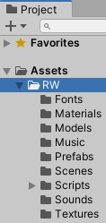
Here’s an overview of what’s included:
- Fonts: This contains the font used throughout the book for UI elements.
- Materials: A folder containing the material files that hold the data for what a 3D model should look like.
- Models: This folder contains all 3D models used in this chapter.
- Music: A music track used for the background music lives in here.
- Prefabs: This folder holds all the prefabs for the scenery and pre-assembled GameObjects. More on prefabs later in this chapter.
- Scenes: A single scene sits in here — the Weapon-Forge scene, which you’ll be working in.
- Scripts: A folder containing a few scripts to get started. The next chapter covers scripting in more detail.
- Sounds: This folder holds the sound effect used when creating ammunition.
- Textures: A folder containing image files that are used as the textures for the 3D models.
Double-click the Weapon-Forge scene file in RW / Scenes to open that scene in the Unity editor. If you take a look at the Game view, you’ll notice there’s nothing there except for a dark gray background. A perfect starting place!
GameObjects¶
GameObjects are the fundamental building blocks of every Unity project. Every single object in the Hierarchy is a GameObject!
Take a look at the Hierarchy — there are two GameObjects already present. Any newly created Unity scene comes supplied with a Main Camera and a Directional Light, as these provide you with a way to view the game world — the light shines on all models and provides shadows while the camera renders a 2D image to your screen.
Go ahead and add a new empty GameObject to the scene by clicking the Plus icon at the top left of the Hierarchy and selecting Create Empty.
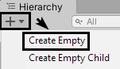
Name this new GameObject Managers. The default name of a newly created GameObject is simply “GameObject”, but you can rename GameObjects by slowly double-clicking it in the Hierarchy or by pressing F2 on your keyboard. Select your new GameObject in the Hierarchy and take a look at the Inspector.
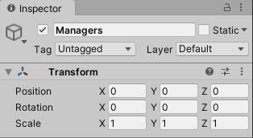
Every GameObject has two things in common:
- Attributes like a name, tag and layer
- A Transform component
You can see and edit the attributes at the very top of the Inspector.
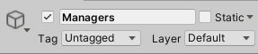
From the top left to the bottom right, these are:
Icon¶
You can assign an icon to GameObjects to make it easier to find them in the Scene view.
Try assigning Managers a blue icon from the top row by clicking on the cube icon and selecting the second icon in the list.
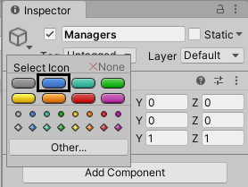
If you look at the Scene view, you’ll see a blue label with “Managers” written inside it. If you don’t see the label immediately, select Managers in the Hierarchy and press F. This will move the camera in the scene view to focus on the selected GameObject.
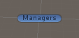
Besides the built-in icons, you can use your own by clicking the Other… button and selecting an image from the assets. You might have noticed that the Main Camera and Directional Lighthave an icon in the Scene view even though their GameObject doesn’t. Some components, like Camera and Light, draw an icon themselves; you can see and toggle these by opening the Gizmos drop-down in the top right of the Scene view. More on components later on in this chapter.
Active checkbox¶
The little checkbox next to the name of the GameObject allows you to temporarily activate or deactivate a GameObject and all of the components attached to it. Deactivating a parent GameObject deactivates all of its children as well. The names of inactive GameObjects turn gray in the Hierarchy.
Name¶
This is simply the name of the GameObject. Make sure to give GameObjects distinct and clear names so you can easily find what you’re looking for, even in a crowded Hierarchy.
Static checkbox and drop-down¶
This checkbox marks a GameObject as static — meaning it won’t move while running the game. Static GameObjects save on performance since a lot of Unity’s under-the-hood systems skip or simplify certain calculations for these GameObjects. A few examples of objects that might be marked static are walls, non-moving props and other pieces of scenery like mountains. By default, GameObjects are dynamic so they are able to move freely.
The static drop-down menu allows you to specify in detail what systems should perceive the GameObject as static. Most of the time, you’ll simply want to check the static checkbox for maximum performance.
Tag¶
The Tag drop-down allows you to assign a tag to a GameObject. A tag is a keyword to put a GameObject together with the rest of its kind in a group. For example, Unity comes with a built-in tag named Player. You can assign this tag to the main character you control. Now, when an enemy is looking around for a hero to attack, it might look for all GameObjects with the Player tag. You can also add your own tags by clicking the Add Tag… list entry. This way, you can add any word or short sentence as a custom tag.
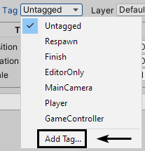
You can use this to add a Healing tag, for example, and whenever the player walks into an area marked with this tag, they regenerate their health. Tags are extremely powerful when used with scripting. One thing to watch out for is that a GameObject can only have a single tag assigned to it.
Layer¶
The Layer drop-down lets you assign a layer to a GameObject. Layers are keywords used for filtering collisions, lights and camera rendering. Similarly to tags, you can add custom layers with the Add Layer… list entry. For collisions, layers can be used to specify which GameObjects collide with others and which don’t. For example, you could add a Ghost layer that doesn’t collide with the scenery but can get hit by the player’s magical projectiles. The same Ghost layer can be used for filtering out light of ghostly entities.
As for using layers for camera filtering, certain effects — like showing a minimap to the player — benefit from using their own layers. For example, you could add red-colored cubes above the heads of enemies and add a Minimap layer to those cubes. You could then add a camera that looks down from above, restrict it to only see the Minimap layer, and show what it sees in a corner of the screen. Like tags, layers are powerful and versatile!
GameObjects for organization¶
Empty GameObjects can be used as dividers and even folders in the Hierarchy. Any GameObject can be parented to another GameObject, making it a child. Click the Plus button at the top left of the Hierarchy and select Create Empty again like you did for Managers. Name this new GameObject Ammunition Spawner. Make this GameObject a child of Managersby dragging it on top of Managers in the Hierarchy.
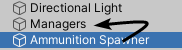
Ammunition Spawner is now offset in the Hierarchy. You’ll see a little arrow to the left of Managers.
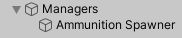
As you can see, Managers is used like a folder in this case, holding a single manager GameObject for now that will soon have some logic added to it.
Components¶
As mentioned before, GameObjects are the basic building blocks, but they’re also containers for components. A component is what gives a GameObject its features, its functionality and some visuals in the Scene view, like the icons. Even an “empty” GameObject has a Transformcomponent, which gives the GameObject a position, rotation and scale in the scene. A GameObject can have multiple components attached to it to make layers of functionality. This is known as an Entity Component System (ECS). In Unity, the entities are the GameObjects and the components are… the components. :]
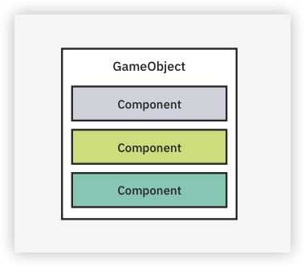
Unity comes with a lot of components built in. Here are some often-used examples with their intended uses:
- Audio Source: Play music and sound effects.
- Light: Shine light on objects in the scene.
- Camera: Render the scene to the Game view.
- Mesh Filter: Loads 3D geometry from an asset.
- Mesh Renderer: Render a 3D mesh from a Mesh Filter component at the position of the Transform component.
- Particle System: Emit particles to create visual effects like fire and smoke.
- Box Collider: Add a cube-shaped collision area to a GameObject.
- Rigidbody: Add physics to a GameObject that has a collider attached.
You can also create your own components by writing scripts. This is where things get interesting as you can implement just about any logic yourself by going this route. Writing scripts will be covered in the next chapter; for now, it’s important to understand what components are and how you can add them to GameObjects.
Adding components¶
Time to add a component and take a look at what makes it tick! Select Ammunition Spawner in the Hierarchy and, in the Inspector, click the Add Component button below the Transformcomponent. Next, start typing “ammunition” until Ammunition Spawner shows up in the list. Click the entry to add it as a component.
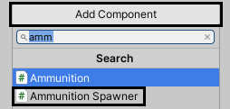
The Ammunition Spawner component is now added to the GameObject of the same name. This component was created by writing a script, denoted by the “(Script)” tag after its name. Before delving into this specific component, you’ll want to know about a few pieces that are shared among all components.
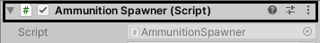
From left to right these are:
Active checkbox¶
Like GameObjects, individual components can be enabled and disabled using a checkbox.
Component name¶
Every component has a distinct name. When writing a script, you can choose this name yourself.
Reference button¶
Clicking this little help button opens Unity’s documentation for any built-in component. You can add a URL to your own documentation via scripting. If you’re unsure what a certain component or its attributes do, make sure to remember this useful button.
Presets¶
The Presets button allows you to store the currently filled in attributes as a preset asset and load existing presets. For example, you might have set up the light for a torch just the way you like it and you want to easily apply the same settings to others of its kind. Simply press the Presets button, click the Save current to… button and save the preset somewhere with your other assets. From now on, the preset you saved will appear in the Presets list after pressing the Presets button — allowing you to instantly apply your carefully tweaked parameters. This is another useful tool to be aware of!
Commands button¶
Note: Random trivia time! Did you know a button with three vertical dots like this one is called a kebab menu?
This final button opens up the commands menu, which you can also access by simply right clicking on a component. It shows even more options to play with.
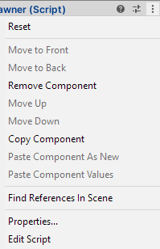
Here’s an overview of what these commands do:
- Reset: Reset a component to its default values. For example, a Tranform component will reset its position, rotation and scale back to (X:0, Y:0, Z:0).
- Move to Front: Move a UI element to the front. This can only be used on Rect Transformson a Canvas. More on that in Chapter 7.
- Move to Back: Same as above, but this moves the UI element to the back.
- Remove Component: Remove the component from the GameObject.
- Move Up: Move the component one spot up in the component list.
- Move Down: Move the component down.
- Copy Component: Copy the component and all of its values to the clipboard.
- Paste Component As New: Add the copied component as a new component, with all the values added.
- Paste Component Values: Paste just the copied values onto a component. This can be useful for quickly applying the same settings across a range of components.
- Find References In Scene: This filters the Hierarchy and Scene view to a certain component type.
- Properties…: Open the properties of this component in a new window.
- Edit Script: This option only appears for custom components. Opens the script that created this component.
There may be even more options here depending on the type of component. A Transformcomponent allows for copying and pasting only certain values — like its position, for example.
Component properties¶
Most components come with lists of properties. These can be numbers, vectors, sentences, colors, lists and references to GameObjects and other components.
If you take a look at a Transform component, it has a property for its position, rotation and scale. These are simply Vector3 properties — meaning each property has an X, Y and Z value.
The Ammunition Spawner, on the other hand, has a lot of different properties going on!

Any property with a button next to it with a circular icon is a reference to another GameObject, component or asset. To illustrate this, create a new empty GameObject, name it Ammunition and reset its Transform component (right-click on Transform from Inspector ▸ Reset). This GameObject will serve as the parent for all pieces of ammunition that will get spawned. Select Ammunition Spawner again and click the little button next to its Ammunition Parent property.
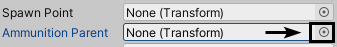
A new window will open up prompting you to select a Transform. Double-click Ammunition in this list to set it as the Ammunition Parent.
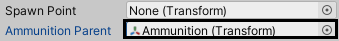
There’s an even easier way to set up references like this! First, click the little button again next to Ammunition Parent, and this time, set it to None. This is simply to clear its value. Now drag the Ammunition GameObject to the Ammunition Parent property to quickly set it as the value.
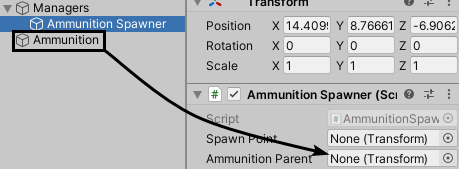
This is a lot faster (and more satisfying) than finding and clicking a value in a list.
Prefabs¶
Now that you know the basics of GameObjects and components, it’s time to discover the power of prefabs! Prefabs are ready-made GameObjects, comparable to templates. A GameObject can be created once with all of its components and properties set up and stored as a prefab asset. This prefab can then be instantiated, which means an instance or copy of the prefab is spawned into the scene.
Instancing prefabs¶
Instancing a prefab can be done manually in the editor or at runtime with the use of scripting. The starter project comes with a lot of prefabs in the RW / Prefabs folder. To instance your first prefab, drag Environment from RW / Prefabs to the root of the Hierarchy.
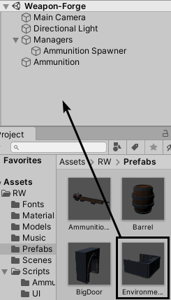
Just like that, you’ve now added a full 3D environment to your scene!
With the way the camera is positioned, the Game view shows a corner of the room.
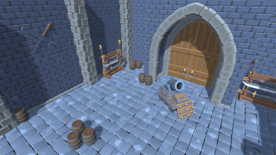
If you take a look at Environment in the Hierarchy, its little cube icon is colored blue to indicate that the GameObject is linked to a prefab. If you expand it, you’ll notice it acts like a folder for the walls, pillars, floor tiles and the different props scattered around.
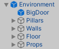
Creating a prefab¶
Creating a prefab is just as easy as instancing one. Just drag a GameObject to a folder in the Project view and a prefab will be created. Drag the Directional Light from the Hierarchy to the RW / Prefabs folder to turn it into a prefab.
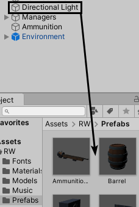
To test out the new light prefab, delete Directional Light from the Hierarchy and drag an instance of Directional Light from RW / Prefabs back to the Hierarchy.
Editing prefabs¶
You can edit prefabs directly, allowing any changes to flow to all of its instances. This is where prefabs really start to shine and can save a tremendous amount of time.
For example, you might have a power-up prefab in your game that looks like a floating orb and you have a bunch of these in your scene. If you ever decide that these power-ups should look like cubes with some fancy particles, you can simply edit the prefab and all instances will be replaced with the new graphics. If you weren’t using prefabs in this case, you’d have to painstakingly replace the graphics for every power-up in the scene one by one.
There are two ways of editing prefabs, depending on the complexity of the prefab:
- Edit the prefab directly from the folder it resides in.
- Open the prefab in Prefab Mode.
First, try editing a prefab from its folder. Select Directional Light in RW / Prefabs and take a look at the Inspector. All of the properties of Directional Light are showing up, ready to be edited. Change the Intensity of its Light component to 2 and select any other property to apply the change. You’ll see that the light in scene gets a lot brighter as the Directional Lightinstance in the Hierarchy changed as well. Be sure to change Intensity back to 1, as everything will look kind of washed out otherwise.
Editing prefabs in this way is quick. It’s fine for simple GameObjects without any children. However, what if you wanted to move one of those barrels in the Environment prefab? If you select Environment in RW / Prefabs, there’s not much to edit here except for its Transformcomponent — and even then, only the Scale will affect the scene. This is where Prefab Mode comes in!
To enter Prefab Mode, either double-click Environment in the RW / Prefabs folder or press the Open button at the top of the Inspector.
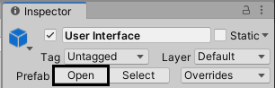
You’ll now see just the Environment GameObject in the Hierarchy. When you take a look at the Scene view, it has a different look. The background is transformed into a blueprint-like grid.
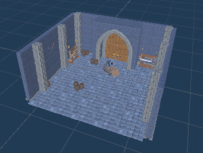
Anything you change in this mode is saved to the prefab, and as a result the changes flow to any existing instances. The Game view is still showing the actual scene instead of the Prefab Mode view, so that’s a good indicator of your changes being applied. Select one of the barrels in the Scene view standing near the door and move it to the other side of the arch.
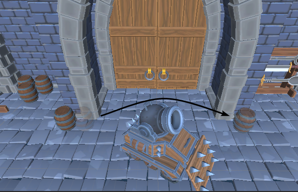
Now save the scene by pressing Control-S or Command-S, or by choosing File ► Save in the top menu. After doing this, you’ll notice the same movement happened in the Game view. Prefab Mode allows you to edit prefabs isolated in full detail. This is another great tool to use when developing your own games!
To exit Prefab Mode, click the left-arrow at the top left of the Hierarchy.
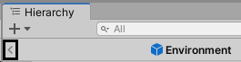
At this point, you might want to save again. It’s good practice to do this sporadically so you won’t lose any progress if disaster strikes.
Making it all come together¶
Now you know how GameObjects, components and prefabs work together to create a game, but the actual gameplay isn’t working just yet. For that, you’ll need to get the heart of the game — the Ammunition Spawner — working and introduce some way of providing input to your player so there’s some interaction going on. Before all that though, you’ll need to add the machine that will create the ammunition — or will appear to do so, at least.
Filling in the blanks¶
Drag the AmmunitionMachine prefab from RW / Prefabs to the root of the Hierarchy. This will add the machine to the middle of the room.
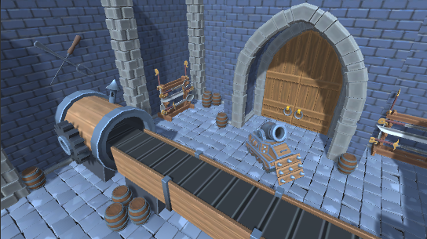
While you’re at it, drag the Smoke prefab to the root of the Hierarchy as well. It has a Particle System component attached that can generate a small puff of smoke on command.
Now to fill in some of the missing properties of the Ammunition Spawner! Select Ammunition Spawner in the Hierarchy and start off by dragging AmmunitionMachine’s child, SpawnPoint, to the Spawn Point property.
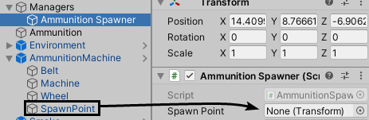
The SpawnPoint’s position will be used as the location for the ammunition to spawn from. Next up is the Ammunition Parent. All ammunition will be parented to this GameObject to keep the Hierachy clean. Drag Ammunition from the Hierarchy to the Ammunition Parent property to assign it.
The Ammunition Prefabs is a list. These can be filled up by simply dragging objects of the correct kind to them (GameObject or prefabs in this case). You can also click the Plus icon at the bottom right to add a new element to the list and then assign a prefab to it.
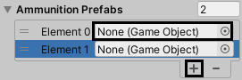
In this case, it’s simpler to just drag the prefabs. Drag LargeFork and LargeSkewer from the RW / Prefabs folder to Ammunition Prefabs. You’ll need to drag them onto the name of the property — left from where it says 0.
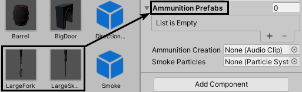
You might be able to tell at this point that this isn’t ordinary ammunition — the tank will shoot sharp and pointy cutlery!
The last property to fill in for now is Smoke Particles. This refers to the Smoke GameObject you added earlier. Drag Smoke from the Hierarchy to the Smoke Particles property to assign it.
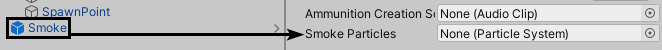
After all this, there are still three things missing to make this into a playable game: some tunes, sound effects and most importantly, a user interface.
Music and sound effects¶
Besides visuals and the feeling of keys and buttons, we humans love music and sounds to immerse ourselves in. Surely there are soundtracks you fondly remember from some of your favorite games — there are some iconic sound effects just about everyone knows about, like the discovery of treasure in The Legend of Zelda or the alert sound from Metal Gear Solid.
The starter project comes with a soundtrack called Pippin The Hunchback by the legendary Kevin MacLeod in the RW / Music folder. To add the soundtrack to the scene, drag the single music asset from RW / Music to the root of the Hierarchy and rename the newly created GameObject to BGM.
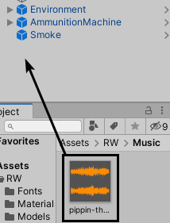
Now, select BGM and you’ll see in the Inspector that there’s an Audio Source component attached to it. This is what will communicate with Unity’s audio system to play audio through your device, whether it’s music or sound effects.
By default, the Audio Source will play the music a single time and then stop. As you can imagine, dead silence after a few minutes of playing can be a bit awkward, so you want the music to loop. To achieve this, check the Loop checkbox and you’ll be golden.
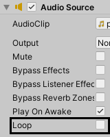
Run the game by pressing the Play button at the top, and a nice tune will greet you. You can stop running the game by pressing that same button again.
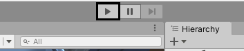
Next up is the Drill sound effect. This is a WAV audio file that lives in the RW / Sounds folder. You can preview the sound by selecting it in the folder and clicking the Play button at the bottom of the Inspector.
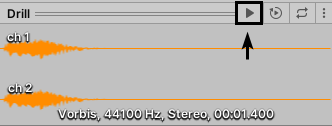
The Ammunition Spawner will play this sound every time a piece of ammunition is created, so it needs a reference to the audio clip.
Select Ammunition Spawner in the Hierarchy and drag Drill from RW / Sounds to the Ammunition Creation Sound property to assign it.
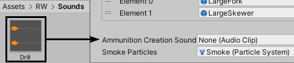
The final piece of the puzzle is the minimalistic UI for this game.
Adding a user interface¶
A user interface allows the player to interact with the game via buttons, toggles, sliders and text. For some genres of games, this is all you’ll need. This is the case for this little project, too, because the player only needs to press a single button for the game to advance.
The user interface for this first project is provided in a prefab so as to not wander too far from the essence of this chapter. No worries though — Chapter 7 will delve deeper into user interfaces!
Drag the User Interface prefab from RW / Prefabs to the root of the Hierarchy to add it to the scene. You’ll see a huge white border appear in the Scene view and a black bar with several UI elements in the Game view.
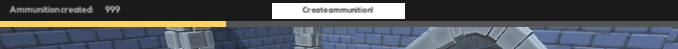
If you hold ALT/Option while clicking on the arrow next to User Interface in the Hierarchy, the GameObject will expand all of its children, their children and so on.
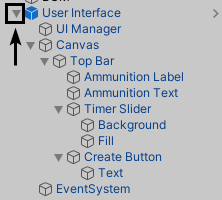
Take a look at how the UI built up, but for this chapter you’ll want to focus on the Create Button, as that needs to trigger the Ammunition Spawner to create a new piece of ammunition if it can. Select Create Button and take a look at the Button component in the Inspector. Below the list of visual properties, there’s an On Click () property.
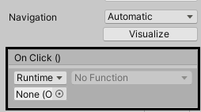
This is a Unity Event, and it expects one or more functions to perform. This can range from enabling a GameObject to triggering a piece of code in a script. The button needs to call a method called AttemptAmmunitionSpawn on the Ammunition Spawner. In order to set this up, start by dragging Ammunition Spawner onto the Object property of the first entry in the On Click () list.

The function selection drop-down on the right is now filled with all the possible functions. Click on the dropdown and select AmmunitionSpawner ▸ AttemptAmmunitionSpawn ().
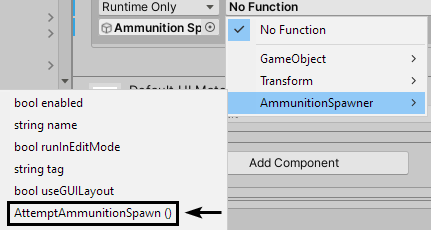
That’s it! Now every time the button is pressed, a new piece of ammunition is created with a puff of smoke. You can only spawn a new piece of ammunition every two seconds though, although there’s no way to tell this just yet. Give it a try by pressing the Play button at the top.
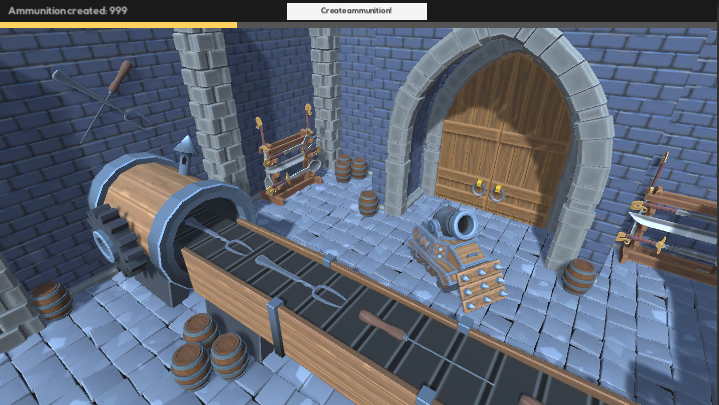
Congratulations on getting to the end of this chapter! With a good grasp of GameObjects, components and prefabs, you’re now ready for the next chapter — which is an introduction to scripting in Unity.
Key points¶
- GameObjects are the basic building blocks and act as containers for components.
- Use a GameObject to give structure in the Hierarchy by using it as a folder or divider.
- Components are the brains of GameObjects. They give GameObjects features.
- Prefabs are assets that hold the state of a GameObject and all of its components. They are comparable to templates or blueprints.
- Instancing a prefab means creating a copy of the original and spawning it into the world.
- You can instance prefabs in the editor or at runtime with scripting.
- Creating a prefab can be done by dragging a GameObject to the Project view.
- Prefabs can be edited in Prefab Mode by double-clicking them in the Project view, or by simply selecting them and using the Inspector to change their properties.
- Import music and audio files into Unity as audio clips that can be played back with an Audio Source component.